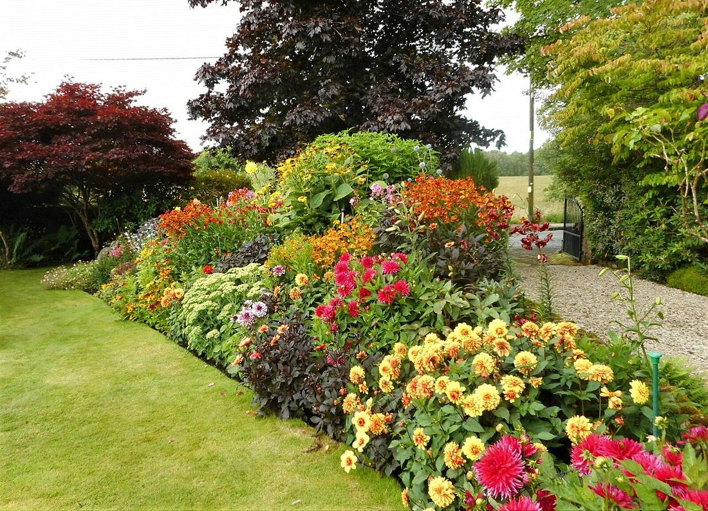
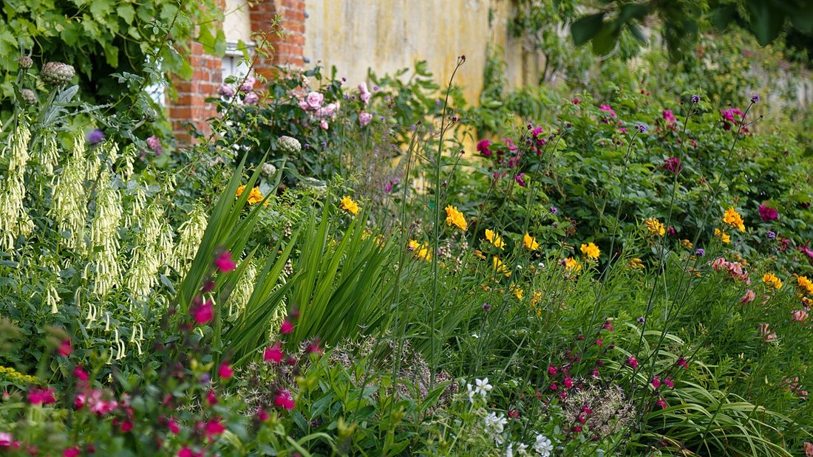
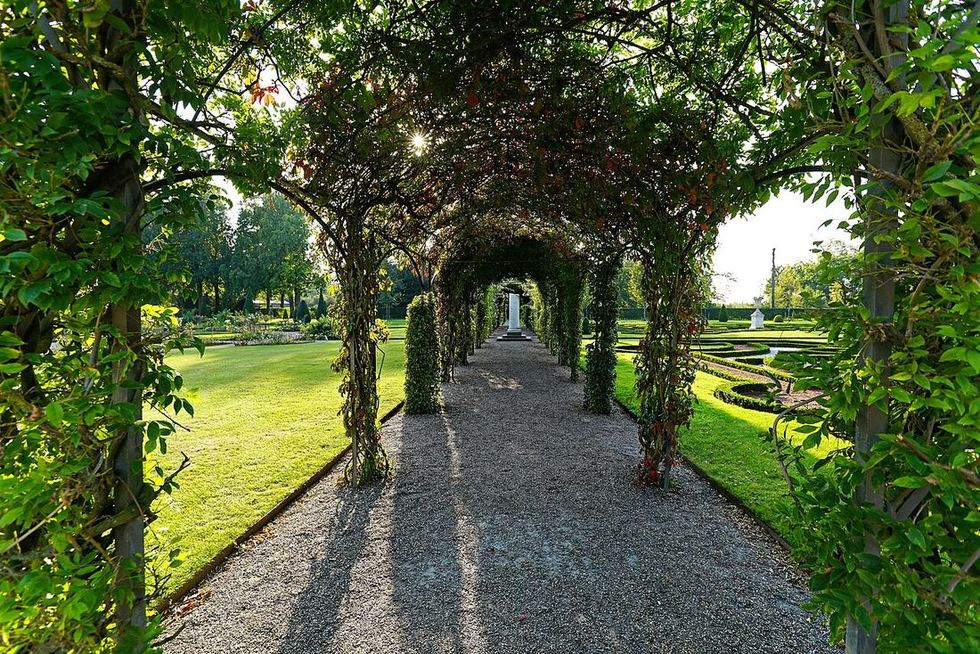
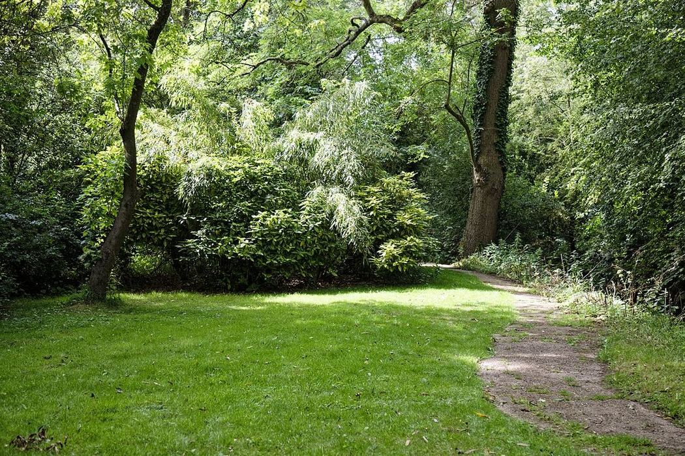

Көркем еңбек · 5-бөлім · Үй мәдениеті Art & Craft · Section 5 · Home Culture Художественный труд · Раздел 5 · Культура дома
🌷 Гүл өсіру және ландшафт дизайны негіздері
🌷 Floriculture & Basics of Landscape Design
🌷 Декоративное цветоводство и основы ландшафтного дизайна
Гүл өсіру және аумақты әсем ұйымдастыру өнері. Growing flowers and arranging outdoor space beautifully. Выращивание цветов и красивая организация участка.
Декоративтік гүл өсіру — әсемдік үшін гүлдер мен өсімдіктер өсіру. Ландшафт дизайны — аула, саябақ немесе бақты әдемі әрі ыңғайлы етіп жоспарлау. Екеуі бірге қоршаған ортаны жасылдандырып, көркейтеді: дұрыс таңдалған өсімдік, көгал, соқпақ пен су айдыны кеңістікті өнер туындысына айналдырады. Decorative floriculture is growing flowers and plants for beauty. Landscape design is planning a yard, park or garden to be beautiful and convenient. Together they green and adorn our surroundings: well-chosen plants, a lawn, paths and water turn a space into a work of art. Декоративное цветоводство — выращивание цветов и растений для красоты. Ландшафтный дизайн — планирование двора, парка или сада так, чтобы было красиво и удобно. Вместе они озеленяют и украшают пространство: удачно подобранные растения, газон, дорожки и водоём превращают участок в произведение искусства.
Гүлзар түрлеріTypes of Flower PlantingsВиды цветников
🔍 Үлкейту үшін фотоны басыңыз.🔍 Tap a photo to enlarge.🔍 Нажмите на фото, чтобы увеличить.




Ландшафт дизайнының элементтеріElements of Landscape DesignЭлементы ландшафтного дизайна
ӨсімдіктерPlantsРастения
Ағаш, бұта, гүл.Trees, shrubs, flowers.Деревья, кусты, цветы.
КөгалLawnГазон
Жасыл «кілем».A green "carpet".Зелёный «ковёр».
СоқпақтарPathsДорожки
Қозғалыс пен сурет.Movement and pattern.Движение и рисунок.
Су айдыныWaterВодоём
Тоған, бұрқақ.Pond, fountain.Пруд, фонтан.
Шағын формаларSmall formsМалые формы
Орындық, арка, мүсін.Benches, arches, sculpture.Скамьи, арки, скульптура.
Гүлзарды қалай жасау керекHow to Make a Flower BedКак разбить клумбу
Орын таңда.Choose a spot.Выбери место. Жарық пен суға жақын жерді таңда.Pick a sunny spot near water.Выбери солнечное место рядом с водой.
Топырақты дайында.Prepare the soil.Подготовь почву. Қазып, арамшөпті тазала, тыңайтқыш қос.Dig, weed, add fertiliser.Вскопай, удали сорняки, внеси удобрение.
Сызба жаса.Plan it.Составь схему. Гүлдерді бойы мен түсіне қарай орналастыр.Arrange flowers by height and colour.Расставь цветы по высоте и цвету.
Отырғыз.Plant.Высади. Биіктерін ортаға/артқа, аласаларын шетке.Tall ones to the centre/back, low ones to the edge.Высокие — в центр/задний план, низкие — по краю.
Күт.Care.Ухаживай. Суар, арамшөп жұл, солған гүлді ал.Water, weed, remove faded flowers.Поливай, пропалывай, убирай увядшие цветы.
💬 Қорытынды💬 In a nutshell💬 Главное
Гүл өсіру мен ландшафт дизайны — табиғатпен бірге сурет салу. Өсімдік, көгал, соқпақ пен суды үйлестіріп, әркім өз ауласын әсем бұрышқа айналдыра алады. Басты ереже: алдымен жоспар (схема), сосын — отырғызу мен күтім.Floriculture and landscape design are like painting together with nature. By combining plants, lawn, paths and water, anyone can turn their yard into a beautiful corner. The main rule: first a plan, then planting and care.Цветоводство и ландшафтный дизайн — это рисование вместе с природой. Сочетая растения, газон, дорожки и воду, каждый может превратить свой двор в красивый уголок. Главное правило: сначала план (схема), потом посадка и уход.